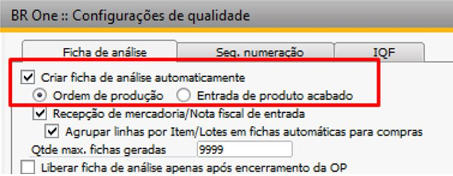
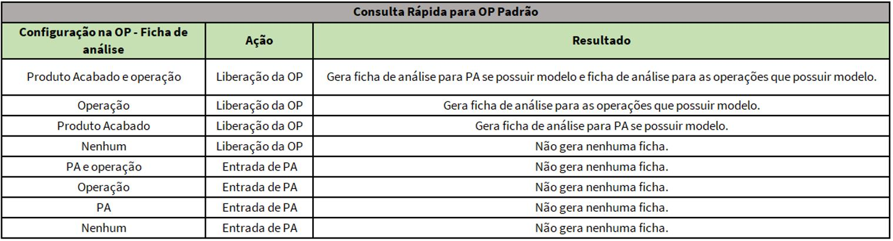
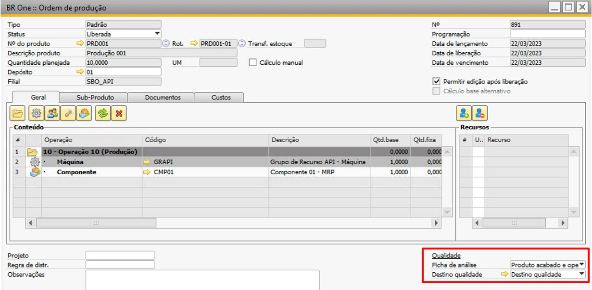
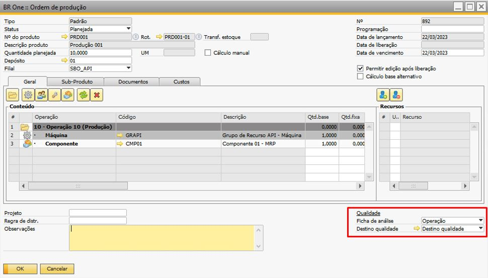
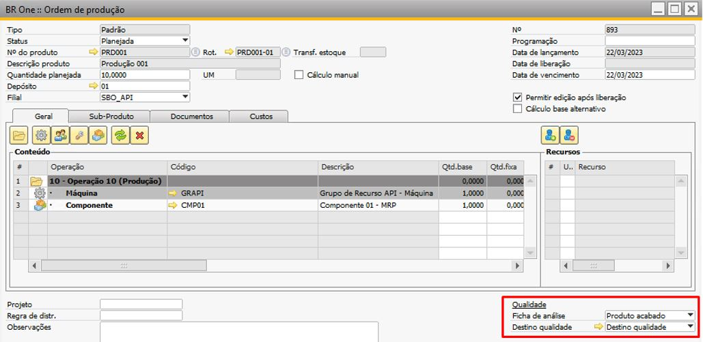
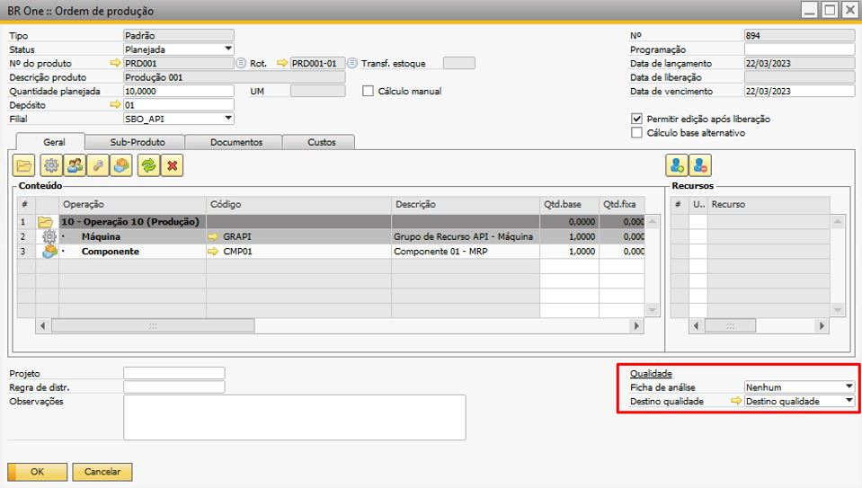

Criar ficha de análise automaticamente na Ordem de Produção - Padrão
Configuração para geração das fichas de análise automáticas com base na ‘Ordem de Produção’.
{kind=link}
Abaixo uma tabela da configuração, ações realizadas dentro do sistema e o resultado das fichas geradas para ‘Ordem Produção Padrão’.
{kind=link}
Iremos realizar o processo com o parâmetro de ‘Ficha de análise’ configurado na ‘Ordem de Produção’.
Importante: para itens administrados por “Lote”, a ficha de análise gerada automaticamente para a ordem de produção padrão, não possui número de lote definido, logo a ficha de análise criada, não levará nenhum valor para o campo “Lote”.
1. Produto Acabado e Operação
Geração da ficha de análise para a ordem de produção padrão configurada no campo ‘Ficha de análise’ como ‘Produto Acabado e Operação – PO’.
{kind=link}
Ao liberar a OP 891, serão validados o produto acabado e as operações que possuem modelos de análises configurados, neste cenário serão geradas duas fichas de análise, uma para o produto acabado e outra para a operação.
Ficha de análise para o produto acabado na liberação da OP:
{kind=link}
Ficha de análise para a operação na liberação da OP:
{kind=link}
2. Operação
Geração da ficha de análise para a ordem de produção padrão configurada no campo ‘Ficha de análise’ como ‘Operação – OP’.
{kind=link}
Ao liberar a OP 892, serão validadas somente as operações que possuem modelos de análises configurados, neste cenário será gerada apenas uma ficha de análise para a operação.
Ficha de análise para a operação na liberação da OP:
{kind=link}
Obs.: Para este cenário não serão criadas fichas para o produto acabado.
3. Produto Acabado
Geração da ficha de análise para a ordem de produção padrão configurada no campo ‘Ficha de análise’ como ‘Produto Acabado – PA’.
{kind=link}
Ao liberar a OP 893 será validado somente se o produto acabado possui modelos de análises configurados, neste cenário será gerada apenas uma ficha de análise para o produto acabado.
Ficha de análise para o produto acabado na liberação da OP:
{kind=link}
Obs.: Para este cenário não serão criadas fichas para a operação.
4. Nenhum
Geração da Ficha de análise para a ordem de produção padrão configurada no campo ‘Ficha de análise’ como ‘Nenhum – NM’.
{kind=link}
Na liberação da OP 894, não é gerado nenhuma ficha de análise.